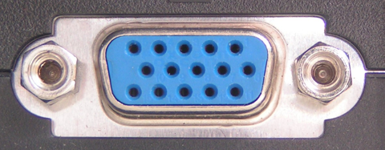
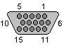
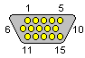
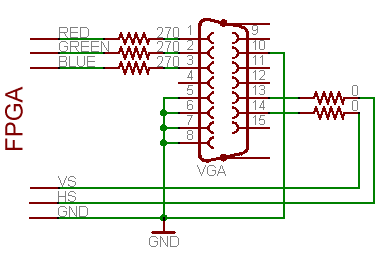
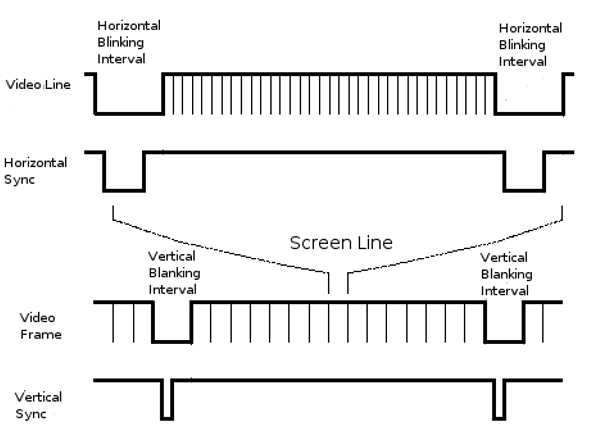
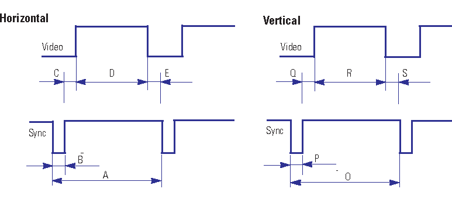
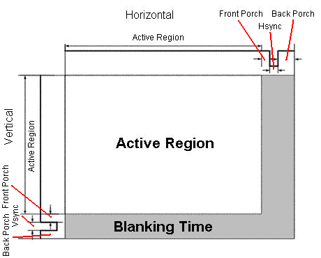
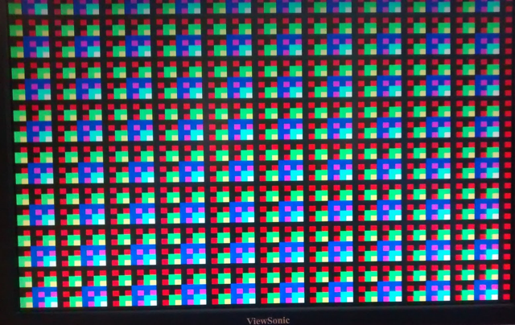

В этой статье я расскажу принцип работы VGA интерфейса. С помощью временных диаграмм и распиновки коннектора / разъёма можно выводить изображения на монитор.
Рис.1 VGA коннектор "папа"

Рис.2 VGA коннектор "мама"
Вначале, неплохо бы узнать распиновку коннектора:
|
 |
 |
|
Рис.3 VGA "мама" |
Рис.4 VGA "папа" |
Таблица 1 Обозначение выводов VGA разьёма
|
Вывод |
Имя |
Направление |
Описание |
|
1 |
RED |
Красное видео (75 Ом, 0.7 В) | |
|
2 |
GREEN |
Зелёное видео (75 Ом, 0.7 В) | |
|
3 |
BLUE |
Синие видео (75 Ом, 0.7 В) | |
|
4 |
RES |
Зарезервировано | |
|
5 |
GND |
Земля | |
|
6 |
RGND |
Земля для красного | |
|
7 |
GGND |
Земля для зелёного | |
|
8 |
BGND |
Земля для синего | |
|
9 |
KEY |
- |
Не используется |
|
10 |
SGND |
Земля для синхро сигналов | |
|
11 |
ID0 |
Не используется | |
|
12 |
SDA |
I2C двунаправленная передача данных | |
|
13 |
HSYNC or CSYNC |
Горизонтальная синхронизация | |
|
14 |
VSYNC |
Вертикальная синхронизация | |
|
15 |
SCL |
I2C синхро сигнал |
Отбросим I2C и остаётся всего несколько выводов. Все земли можно соединить вместе, в итоге будет 3 цвета RGB, на эти выводы подаётся аналоговое напряжение от 0 до 0.7 В, чем больше напряжение на цветовом входе тем "насыщеннее" данный цвет. 0.7 В на всех 3 выводах дадут самый яркий белый цвет на который способен монитор. Таким образом можно получить практически любой цвет смешиванием 3-ёх составляющих. Для простоты я буду подавать на каждый из выводов либо 0 либо 0.7 В. Если хочется большого разнообразия цветов, нужно использовать преобразователи из цифрового кода в аналоговое напряжение ЦАП. Его можно составить самому с помощью резисторной матрицы. Либо достать специальную микросхему, к примеру: AD664
На выводах вертикальной и горизонтальной синхронизации действуют уровни ТТЛ сигналов.
- Уровень логического нуля, не более +0,8 В
- Уровень логической единицы, не менее +2,4 В
Вообщем они стабильно работают с МК при 3.3 В и 5 В.
При питании от 3.3 В (стандартное напряжение ПЛИС) (логическая 1 ≈ 3.3 В) на цветовые входы сигнал подаётся через резисторы 270 Ом.

Рис.5 Подключение VGA к цифровому устройству с питанием 3.3 В
Как мы помним входное сопротивление цветовых VGA входов 75 Ом.
Рассчитаем максимальное напряжение:
3.3 * 75 / (75 + 270) = 0.717 В
Немного превышает, но работает без проблем.
При питании от 5 В, потребуется резисторы номиналом:
R = 3.3 * 75 / 0.7 - 75 = 460 ≈ 470 Ом
Остаётся узнать в какие моменты подавать единички и нолики на эти выводы.
Разрешение изображения и частота обновления определяется интервалами импульсов синхронизации. Во время синхроимпульсов на RGB выводах, должно быть 0 В.

Рис. 6.1 Временные диаграммы сигналов
Один кадр в VGA-стандарте, по сути, состоит из следующих сигналов:

Рис. 6.2 Временные диаграммы сигналов

Рис.7 Отображение синхроимпульсов
Рассмотрим параметры для разрешения 640 x 480 @ 60 Гц
Таблица 2 частотные параметры VGA интерфейса
|
Частота обновления кадров |
60 Гц |
|
Вертикальное обновление |
31.469 кГц |
|
Частота пикселей |
25.175 МГц |
Таблица 3 временные параметры для горизонтальной линии
|
Часть линии |
Пиксели |
Время [мкс] |
|
Видео данные (D) |
640 |
25.422 |
|
Front porch (E) |
16 |
0.636 |
|
Ширина синхро импульса (B) |
96 |
3.813 |
|
Back porch (C) |
48 |
1.907 |
|
Целая линия (A) |
800 |
31.778 |
Таблица 4 временные параметры для 1 кадра
|
Часть кадра |
Линии |
Время [мс] |
|
Видео данные (R) |
480 |
15.253 |
|
Front porch (S) |
10 |
0.318 |
|
Ширина синхро импульса (P) |
2 |
0.064 |
|
Back porch (Q) |
33 |
1.049 |
|
Весь кадр (O) |
525 |
16.683 |
Не обязательно использовать точно такие же значения как в таблице, лишь бы они были достаточно близкими. Для данного разрешения используются отрицательные вертикальный и горизонтальный синхроимпульсы, для других разрешений это может не совпадать.
Можно заметить что частота вертикальной синхронизации иногда не совпадает с частотой обоновления экрана. LCD моинторы пришли на смену ЭЛТ мониторов, которые заменили большие телевизоры с электронно-лучевой трубкой. Когда появилась возможность выводить цветное изображение на экран у американских инженеров возникла проблема, тот стандарт частоты передачи звука который они выбрали "не согласуется" (вызывает помехи) с 60 Гц. Стандарт для частоты был 44.056 кГц. Но они выяснили что изменение частоты на 0.1 % позволит это исправить и т.к. стандарт передачи звука был уже общепринятым, они уменьшили частоту обновления экрана.
60 * 0.999 = 59.94
Т.к. многие значения были приняты ещё тогда, производели к ним привыкли и продолжают использовать, если сейчас изменить стандарт то придётся проделать слишком большую работу, не считая того что многие устройства могут просто перестать работать с новыми стандартами.
Подробней про это можно прочитать здесь и здесь
Я не знаю причину отличий другиих значений и почему нельзя было сделать временные интервалы кратные 10, 5 или хотя бы 2.
Из таблиц видно что есть время когда на экран ничего не выводится, это сделано для синхронизации, это можно представить будто наш рисующий луч (раньше изображение отобрадалось электронным лучём) уходит за границы экрана. Также нужно подождать несколько пустых линий, которые уходят под видимый экран.

Рис. 8 Экран с зонами синхронизации (Blanking Time)
Легче рассчитать и реализовать время 1 пикселя и затем всё подстраивать под него, иногда указывается просто частота пикселей и остальные значения в пиксеfлях.
В принципе это всё что ннеобходимо знать чтобы рисовать на VGA мониторе, осталось запрограммировать (или любым другим способом) цифровое устройство и попытаться вывести изображение.
Телевизор работает почти также, но там только "1 провод", значит все сигналы соединены вместе, если цвет не так важен, то принцип тот же.
Попробуем вывести изображение и посмотреть на осцилограмму сигнала.
У меня есть готовая тестовая программа для ПЛИС отсюда которая выводит данное изображение:

Рис.9 Полученное изображение на мониторе
Рассмотрим осцилограмму. Сверху вниз по порядку идут: Красный, Зелёный, Синий, Горизонтальная синхронизация, Вертикальная синхронизация.

Рис. 10 Осцилограмма сигналов полученного изображения
Здесь отображен 1 кадр, можно догадаться как будет выглядеть изображение, т.к. каждая полоса состоит из имульсов (если приблизить там есть зоны где постоянно 1, но не длинной во всю линию), то не будет одноцветных линий. Если разбить сигналы на столбцы, видно что есть линии на которых промежутки только красного либо зелёного цветов.
Используемые мной значения: